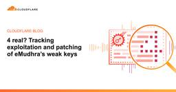

Cloudflare Blog
https://blog.cloudflare.com/
Technical deep dives, product updates, and insights from the teams that are helping to build a better Internet.
フィード

4 real? Tracking exploitation and patching of eMudhra’s weak keys
Cloudflare Blog
Four, just four: that’s the key to break into any unpatched connection on the Internet that is using eMudhra certificates. Here’s how we quickly patched Cloudflare, what evidence we can see of attempted exploitation, and how much of the rest of the Internet remains exposed.
20時間前
Cloudflare services for private origins is now generally available
Cloudflare Blog
Public traffic to private origins, with WAF, bot management, caching, and Workers, is now available to every customer with Cloudflare One connectivity.
1日前
Cloudflare DDoS Threat Report 2026 Q3: More swarms, fewer giants
Cloudflare Blog
Cloudflare mitigated over 8,200 DDoS attacks per hour in Q3 2026 as attackers shifted to shorter, high-frequency strikes. Explore the latest threat data, including the collapse of CLDAP vectors and the impact of recent botnet takedowns.
2日前
Introducing the Cloudflare PHP Capture the Flag challenge 1
1
Cloudflare Blog
We are launching a PHP Capture the Flag challenge integrated with our Bug Bounty program to test our WAF protections. Security researchers are invited to bypass our defenses and capture the flag to help make the Internet safer.
4日前
What took the Internet offline in Q3 2026
Cloudflare Blog
An examination of global Internet disruptions observed by Cloudflare Radar during the third quarter of 2026. This review analyzes how power failures, natural disasters, and government shutdowns impacted network connectivity and traffic.
4日前
Cross-request KV cache exposure in the GLM-5.3 Workers AI model, and our remediation with SGLang
Cloudflare Blog
A configuration mismatch in GLM 5.3 on Workers AI triggered an SGLang bug that exposed KV cache pages across requests. Here is how we addressed the issue.
5日前
Origin Range Requests: Serving large files without range-request tuning
Cloudflare Blog
Naive byte-range caching can waste gigabytes of origin bandwidth on small requests. We rebuilt our cache architecture in Pingora to coordinate partial fetches automatically, cutting R2 p99 latency in half.
8日前
Bringing post-quantum cryptography to geographically fenced key management
Cloudflare Blog
Cloudflare's new post-quantum GeoKey Manager protects geographically fenced decryption keys from harvest now, decrypt later attacks. Learn how we redesigned our cryptography stack to support strict data sovereignty in a post-quantum world.
8日前

Localizing compliance at scale: achieving South Korea’s ISMS certification
Cloudflare Blog
Cloudflare has achieved South Korea's ISMS certification following an audit across 80 controls. Learn how we localized user consent flows, adapted social sign-up paths at the edge, and validated our global security program.
9日前
Introducing full transaction detection for Cloudflare WAF
Cloudflare Blog
Cloudflare's web application firewall can now correlate an HTTP request with its response. Full transaction detection helps every customer find successful exploits, data exposure, and risky misconfigurations that request-only inspection can miss.
10日前
Cloudflare deploys protections against php2shell vulnerability
Cloudflare Blog
Cloudflare has deployed default web application firewall (WAF) protections for newly disclosed PHP vulnerabilities before public disclosure. The rules use request and response signals to stop exploit attempts and prevent exposed data from reaching attackers.
10日前
How Commerce.com and Cloudflare are getting storefronts ready for AI agents
Cloudflare Blog
Almost 100,000 Commerce.com domains now give AI agents real shopping tools through WebMCP on Cloudflare. Here's how we turned it on across every store at once, while keeping each merchant in control.
10日前
8 eMudhra certificates are compromised. Here's what you need to know
Cloudflare Blog
Following the discovery that eight eMudhra intermediate certificates use weak keys, Cloudflare is deploying mitigations and releasing client updates. We explain the impact, our response, and what customers and developers should do next.
11日前
Introducing tsrs: A port of TypeScript to Rust
Cloudflare Blog
Cloudflare is collaborating on tsrs, a Rust port of TypeScript that is up to 8x faster and uses 70% less memory.
11日前
Cutting our inference bill by 68% by being obsessive about optimization
Cloudflare Blog
When our AI code reviewer's cost per run doubled, we dug into the token usage to find out why. Learn how we used prompt caching and intelligent model routing to slash our inference bill by 68% while speeding up reviews.
12日前
Introducing Clairic, a new System One class of extraction models
Cloudflare Blog
Clairic is a new model from Cloudflare that is a System One extraction modeI, capable of extracting, computing, estimating, and forecasting data from unstructured inputs.
12日前
Beyond the patch: Protecting your NetScaler gateway against future vulnerabilities
Cloudflare Blog
CVE-2026-88771 lets attackers run commands on NetScaler Gateway before anyone signs in. Patching takes time most teams don't have, so the sign-in decision has to move in front of the vulnerable code.
12日前
Continuous accountability for Verified bots
Cloudflare Blog
Identity alone doesn't guarantee a bot will behave responsibly. We are introducing a system to continuously evaluate whether Verified bots honor site preferences, like robots.txt and HTTP 429s, ensuring they remain accountable over time.
15日前
A fully programmable secure web gateway
Cloudflare Blog
Cloudflare Gateway and Data Loss Prevention have inherited the flexibility and power of Cloudflare Workers through our full-stack integration with the Cloudflare Developer platform.
16日前
Deploy with Void
Cloudflare Blog
Introducing Void: an open-source SDK, CLI, and self-hosted platform for building full-stack Vite apps and deploying them to Cloudflare.
16日前